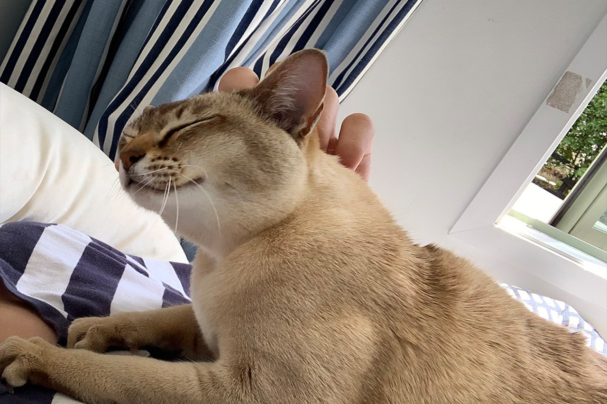
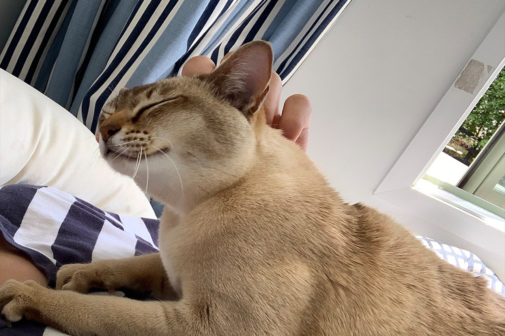

Outdoor cats are active both day and night, although they tend to be slightly more active at night. Domestic cats spend the majority of their time in the vicinity of their homes, but can range many hundreds of meters from this central point. They establish territories that vary considerably in size, in one study ranging from 7 to 28 hectares (17–69 acres). The timing of cats' activity is quite flexible and varied, which means house cats may be more active in the morning and evening, as a response to greater human activity at these times. Cats conserve energy by sleeping more than most animals, especially as they grow older. The daily duration of sleep varies, usually between 12 and 16 hours, with 13 and 14 being the average. Some cats can sleep as much as 20 hours. The term "cat nap" for a short rest refers to the cat's tendency to fall asleep (lightly) for a brief period. While asleep, cats experience short periods of rapid eye movement sleep often accompanied by muscle twitches, which suggests they are dreaming.
Domestic cats use many vocalizations for communication, including purring, trilling, hissing, growling/snarling, grunting, and several different forms of meowing. Their body language, including position of ears and tail, relaxation of the whole body, and kneading of the paws, are all indicators of mood. The tail and ears are particularly important social signal mechanisms in cats. A raised tail indicates a friendly greeting, and flattened ears indicates hostility. Tail-raising also indicates the cat's position in the group's social hierarchy, with dominant individuals raising their tails less often than subordinate ones. Feral cats are generally silent.:208 Nose-to-nose touching is also a common greeting and may be followed by social grooming, which is solicited by one of the cats raising and tilting its head. Purring may have developed as an evolutionary advantage as a signalling mechanism of reassurance between mother cats and nursing kittens. Post-nursing cats often purr as a sign of contentment: when being petted, becoming relaxed, or eating. The mechanism by which cats purr is elusive. The cat has no unique anatomical feature that is clearly responsible for the sound.